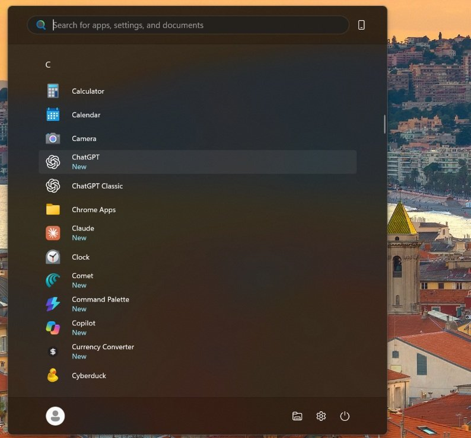

新闻 · 2026-11-28 12:00
全球首个：联想为部分 Win11 商用电脑预装 OpenAI ChatGPT，企业登录最高可领 100 美元优惠额度
据IT之家援引Windows Latest报道，联想成为全球首家在部分Windows 11商用电脑上预装ChatGPT的PC厂商。OpenAI同步推出商业推广：企业通过预装应用登录或创建ChatGPT Business工作区，最高可获每个席位100美元优惠额度。该额度并非现金，不能抵扣订阅费用或获取API额度，只能用于符合条件的服务用量。

来源与核验
单一信源报道，未交叉核实